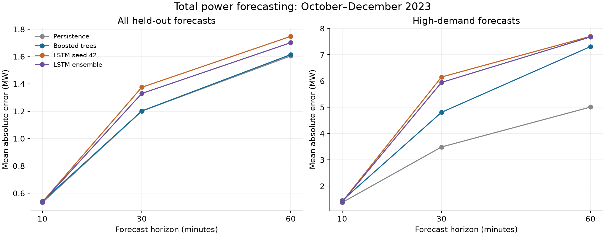

Target: total power 10, 30 and 60 minutes ahead. All models were evaluated on exactly the same held-out forecast origins. Lower errors are better. This is a modest benchmark on one chronological holdout, not a comprehensive hyperparameter search.
Persistence had the lowest mean absolute error at every horizon. Neither the small LSTM nor the selected boosted trees established an improvement on that primary metric. Trees beat every individual LSTM run at 30 and 60 minutes; at 10 minutes their errors were close.
Trees reduced root-mean-square error compared with persistence at all three horizons, including about 10% at 30 and 60 minutes. However, persistence also had lower absolute error on the high-demand subset. A model can reduce large squared errors overall while still underpredicting sustained peaks; the metrics answer different questions.
The three LSTM runs had 30-minute MAE between 1.279 and 1.415 MW and 60-minute MAE between 1.664 and 1.777 MW. Averaging their predictions improved on some individual runs but did not beat the baseline. The day-bootstrap intervals favor trees over seed 42 and the LSTM ensemble at 30 and 60 minutes; the seed-42 comparison at 10 minutes is inconclusive.
Practical choice from this benchmark: retain persistence for a simple MAE-focused forecast. Consider trees if reducing squared error is the priority. Further LSTM work needs evidence from broader chronological backtests, alternative lookback windows or workload/scheduler information.

| model | horizon_minutes | MAE_MW | RMSE_MW | bias_MW | peak_MAE_MW | peak_n | n |
|---|---|---|---|---|---|---|---|
| Persistence | 10 | 0.5326 | 1.2350 | 0.0002 | 1.3788 | 546 | 13242 |
| Persistence | 30 | 1.2011 | 2.1367 | 0.0004 | 3.4909 | 546 | 13242 |
| Persistence | 60 | 1.6054 | 2.7141 | 0.0006 | 5.0094 | 546 | 13242 |
| Boosted trees | 10 | 0.5414 | 1.1995 | -0.0963 | 1.4539 | 546 | 13242 |
| Boosted trees | 30 | 1.2022 | 1.9232 | -0.2999 | 4.8091 | 546 | 13242 |
| Boosted trees | 60 | 1.6147 | 2.4516 | -0.6266 | 7.3101 | 546 | 13242 |
| LSTM seed 42 | 10 | 0.5369 | 1.2282 | 0.0007 | 1.4046 | 546 | 13242 |
| LSTM seed 42 | 30 | 1.3755 | 2.1484 | -0.6060 | 6.1528 | 546 | 13242 |
| LSTM seed 42 | 60 | 1.7481 | 2.6216 | -0.8127 | 7.6995 | 546 | 13242 |
| LSTM seed 43 | 10 | 0.5409 | 1.2260 | -0.0146 | 1.4129 | 546 | 13242 |
| LSTM seed 43 | 30 | 1.4145 | 2.2126 | -0.6985 | 6.2564 | 546 | 13242 |
| LSTM seed 43 | 60 | 1.7774 | 2.6929 | -0.9842 | 8.0081 | 546 | 13242 |
| LSTM seed 44 | 10 | 0.5341 | 1.2320 | -0.0045 | 1.3909 | 546 | 13242 |
| LSTM seed 44 | 30 | 1.2792 | 2.0425 | -0.4476 | 5.4403 | 546 | 13242 |
| LSTM seed 44 | 60 | 1.6641 | 2.5410 | -0.7435 | 7.3219 | 546 | 13242 |
| LSTM ensemble | 10 | 0.5359 | 1.2285 | -0.0061 | 1.4009 | 546 | 13242 |
| LSTM ensemble | 30 | 1.3302 | 2.1029 | -0.5840 | 5.9465 | 546 | 13242 |
| LSTM ensemble | 60 | 1.7018 | 2.5871 | -0.8468 | 7.6765 | 546 | 13242 |
Peak means actual target power at or above the training-period 95th percentile (18.967 MW). LSTM ensemble averages three independently initialized models and uses three times the individual-model inference effort. Seed 42 is the predeclared individual-model comparison; it was not selected on test performance.
| n | origin_start | origin_end | last_target | |
|---|---|---|---|---|
| train | 26490 | 2023-01-01 05:50:00 | 2023-07-31 22:50:00 | 2023-07-31 23:50:00 |
| validation | 8421 | 2023-08-01 00:00:00 | 2023-09-30 22:50:00 | 2023-09-30 23:50:00 |
| test | 13242 | 2023-10-01 00:00:00 | 2023-12-31 22:50:00 | 2023-12-31 23:50:00 |
Six-hour input history (36 observations); ten physical/power fields plus four calendar features at each time step. Trees receive the same sequence flattened. Both algorithms predict changes from current total power; persistence predicts no change. Input standardization uses January–July data only. Target windows stay within their assigned split. Historical context before validation/test boundaries is allowed because it is available at forecast time.
Timestamps within 1.01 seconds of minute boundaries are normalized. Data are reindexed to a complete 10-minute grid. No missing values are imputed; windows spanning any absent record are excluded. The error-prone average return-temperature field and calculated PUE/waste-heat fields are excluded. Other outliers and zero-flow records are retained. All input measurements are assumed available without reporting delay.
LSTM: one 32-unit recurrent layer and three linear outputs; MAE loss, Adam learning rate 0.001, batch size 256, up to 30 epochs, early stopping after five validation epochs without improvement. Three seeds: 42, 43, 44. Each run restores its best validation checkpoint.
Trees: one histogram gradient-boosting regressor per horizon, 200 iterations, learning rate 0.05, MAE loss, 30 minimum samples per leaf and L2 penalty 1. Maximum leaf counts 15 and 31 were compared on validation mean MAE; selected value: 31. No model was refit on validation data.
[
{
"model": "LSTM seed 42",
"horizon_minutes": 10,
"LSTM_minus_tree_MAE_MW": -0.00446663420680809,
"day_bootstrap_95pct": [
-0.00966101053220382,
0.0008054971914859363
],
"individual_seed_MAE_range_MW": [
0.5340805053710938,
0.5409390926361084
]
},
{
"model": "LSTM ensemble",
"horizon_minutes": 10,
"LSTM_minus_tree_MAE_MW": -0.005432052483719488,
"day_bootstrap_95pct": [
-0.010471212352761397,
-0.000510394312126478
],
"individual_seed_MAE_range_MW": [
0.5340805053710938,
0.5409390926361084
]
},
{
"model": "LSTM seed 42",
"horizon_minutes": 30,
"LSTM_minus_tree_MAE_MW": 0.17333103034054603,
"day_bootstrap_95pct": [
0.13344388126628265,
0.21941767335665485
],
"individual_seed_MAE_range_MW": [
1.2792080640792847,
1.4145236015319824
]
},
{
"model": "LSTM ensemble",
"horizon_minutes": 30,
"LSTM_minus_tree_MAE_MW": 0.12798165843196324,
"day_bootstrap_95pct": [
0.09158169407684956,
0.16613819289068993
],
"individual_seed_MAE_range_MW": [
1.2792080640792847,
1.4145236015319824
]
},
{
"model": "LSTM seed 42",
"horizon_minutes": 60,
"LSTM_minus_tree_MAE_MW": 0.13341639829948246,
"day_bootstrap_95pct": [
0.09757712528982354,
0.17115968302077836
],
"individual_seed_MAE_range_MW": [
1.6640911102294922,
1.7773650884628296
]
},
{
"model": "LSTM ensemble",
"horizon_minutes": 60,
"LSTM_minus_tree_MAE_MW": 0.08716000217501473,
"day_bootstrap_95pct": [
0.05764517309266096,
0.12026024573807059
],
"individual_seed_MAE_range_MW": [
1.6640911102294922,
1.7773650884628296
]
}
]
Intervals resample entire calendar days together (2,000 paired bootstrap draws). Negative LSTM-minus-tree differences favor LSTM. They are approximate and do not capture dependence across days or uncertainty from other yearly operating regimes.
Only one year and one site; the final test quarter has no missing grid records, while earlier training periods do. No job scheduler, utilization, weather or maintenance labels. Model hyperparameter searches were deliberately small and are not matched in compute. This comparison establishes performance for this configuration and holdout, not universal superiority.
Source SHA-256: 56a48dd66382896890dfc2e4940ec90f894bb85795ee8e85ea2708dda05796bf. Original workbook unchanged. Runtime versions: {'python': '3.12.14', 'torch': '2.15.0', 'sklearn': '1.9.1', 'numpy': '2.5.4', 'pandas': '2.2.3'}. Total experiment time: 2.6 minutes.